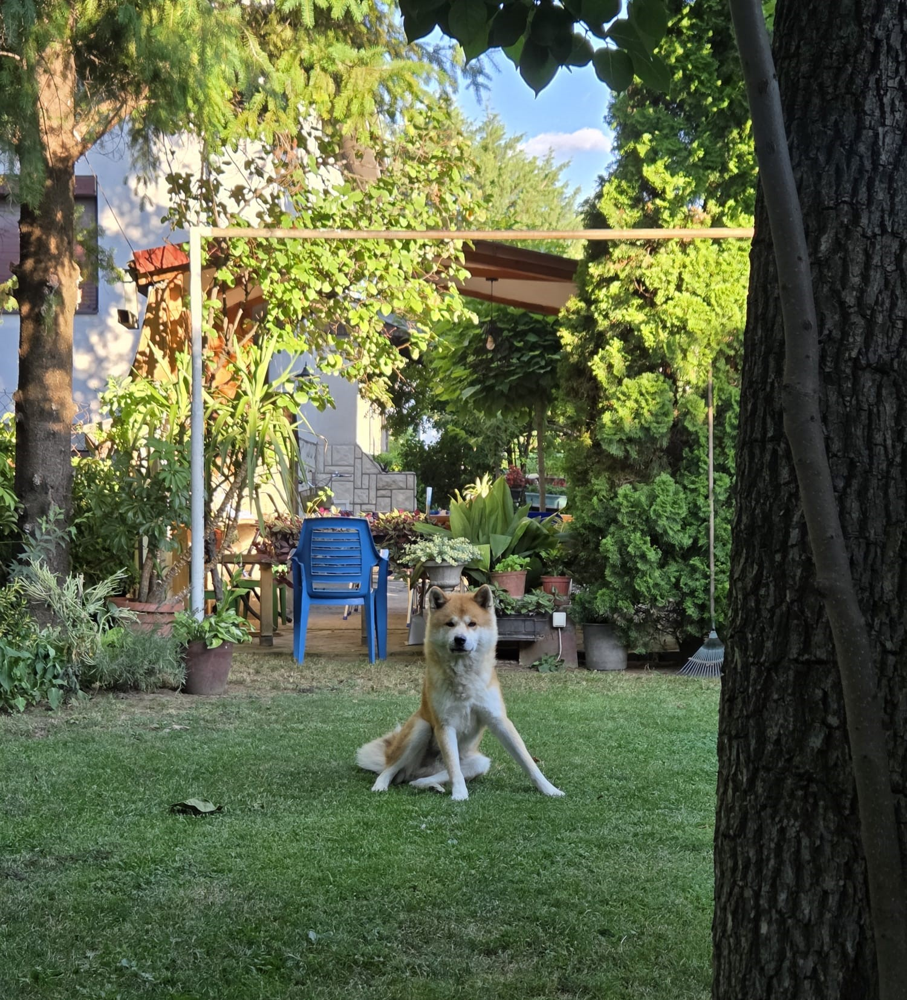
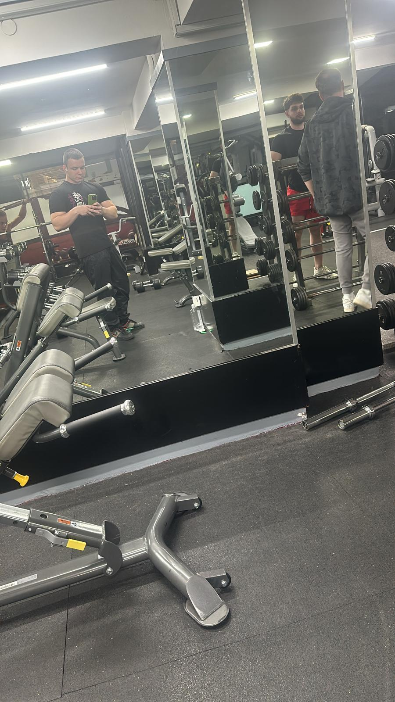
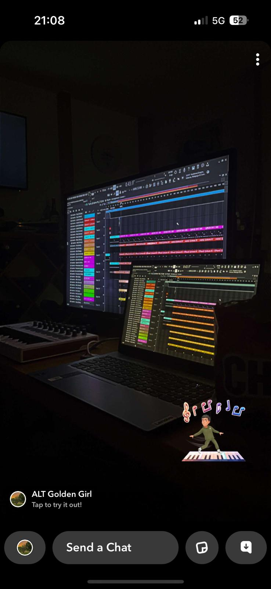

My Hobbies & Interests
🏋️ Bodybuilding & Fitness
I love to stay active, especially working out outdoors. It's a lifestyle that gives me focus and energy.
🐕 Walking with Stark
My Japanese Akita, Stark, is my best friend. We take long walks together and enjoy nature.
🎮 Gaming
Gaming with friends is a fun way to relax and connect. I enjoy team-based and strategy games.
💻 Programming
Programming is part of my everyday life. I use it for projects, school, and creative problem solving.
🎹 Piano & Music
I studied at DMBUC Ilija Nikolovski-Luj. Playing piano keeps me creative and calm.
🌍 Travel, Swim & Ski
I love exploring new places, swimming in summer, and skiing during winter holidays.